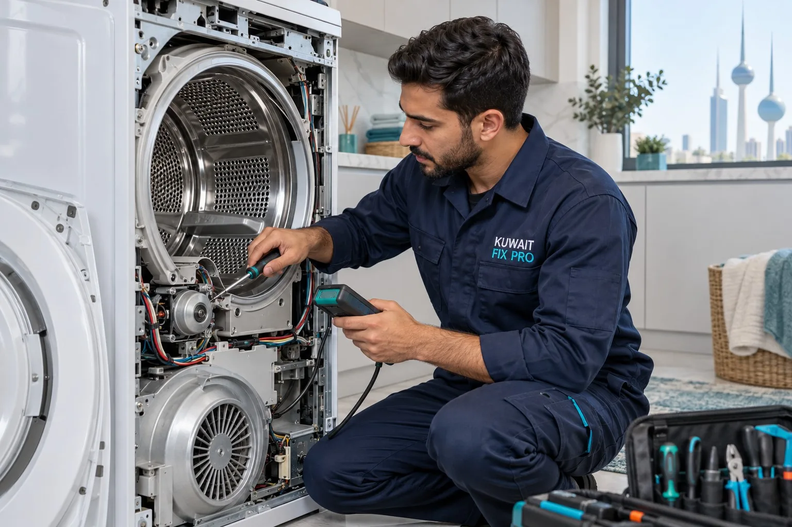
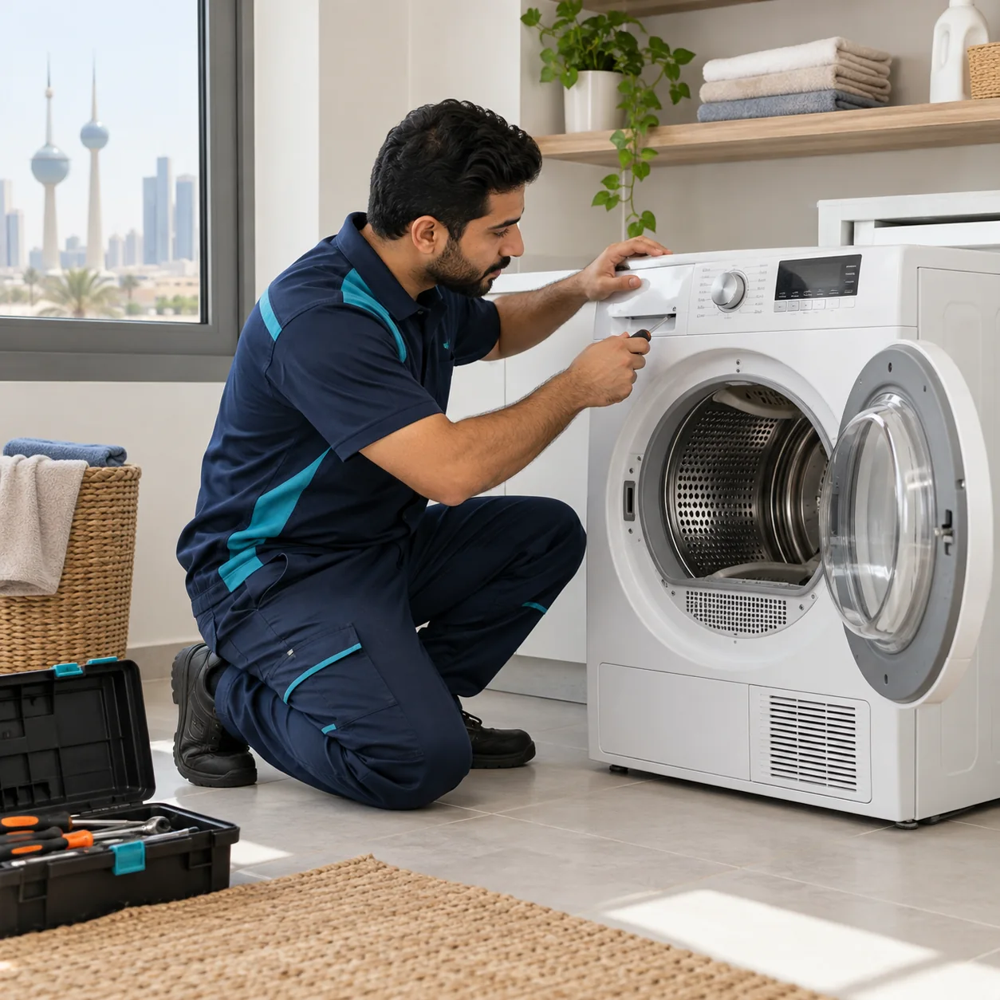
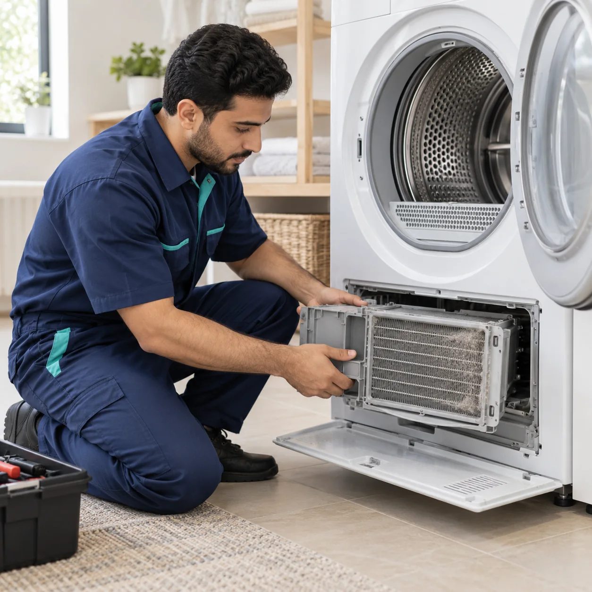
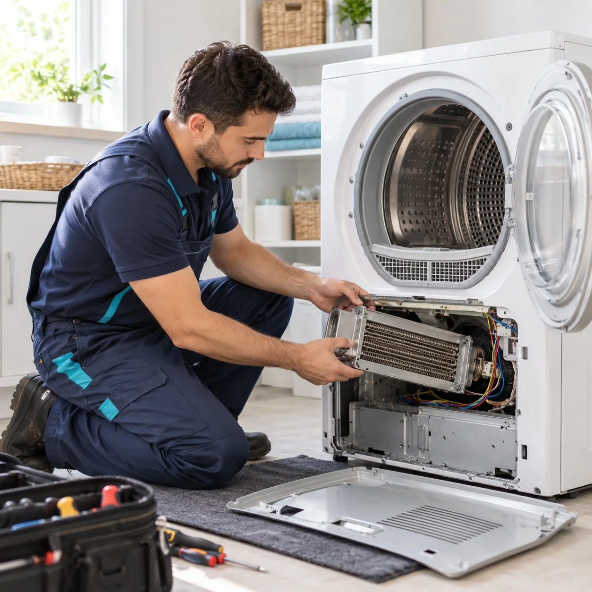
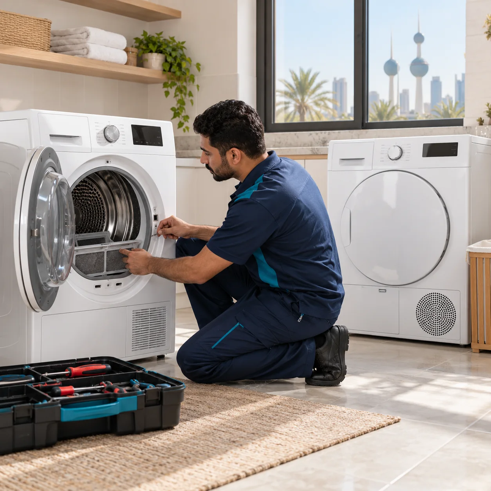

أعطال شائعة
- النشافة تعمل من دون حرارة.
- الحوض لا يدور أو يتوقف خلال الدورة.
- الملابس تبقى رطبة بعد انتهاء التجفيف.
- صوت غير معتاد أو توقف مفاجئ.
هل النشافة لا تسخن أو تترك الملابس رطبة؟ نفحص التسخين ودوران الحوض، ونحدد سبب ضعف التجفيف ثم نوضح الحل والتكلفة قبل الإصلاح.

نحدد سبب العطل أولًا، ثم نوضح لك الإجراء والتكلفة قبل الإصلاح.
نبدأ بفحص النشافة لتحديد سبب ضعف التجفيف أو توقفها، ثم نوضح لك الإجراء والتكلفة قبل البدء. استبدال القطع يكون عند الحاجة ضمن خدمة الإصلاح فقط.
الماركات: نستقبل طلبات صيانة نشافات ماركات متعددة، بحسب نوع الجهاز والعطل.
أرسل نوع النشافة ووصف العطل، ونرتب فحصًا منزليًا في الأحمدي والمناطق القريبة.

هل النشافة لا تعمل أو تترك الملابس رطبة؟ نفحص سبب توقفها أو ضعف التجفيف، ونشرح خيار الإصلاح والتكلفة قبل البدء.
احجز عبر واتساب
هل نشافة المكثف لا تجفف جيدًا أو يتجمع فيها الماء؟ نفحص وحدة التكثيف وأجزائها، ونحدد الإجراء المناسب قبل الإصلاح.
احجز عبر واتساب
هل المجفف الحراري لا يسخن أو لا يدور؟ نفحص التسخين والحوض، ونوضح سبب العطل والتكلفة قبل تنفيذ الإصلاح.
احجز عبر واتساب
هل تواجه مشكلة في نشافة ملابس من أي نوع أو ماركة؟ أرسل الموديل ووصف العطل لنتأكد من إمكانية خدمتها ونرتب الفحص.
احجز عبر واتسابمعلومات تساعدك قبل حجز خدمة الصيانة.
نعم، نفحص سبب ضعف أو انقطاع الحرارة ونوضح خيار الإصلاح والتكلفة قبل البدء.
أرسل نوع الجهاز ووصف المشكلة عبر واتساب، ونرتب فحص النشافة وتحديد سبب توقف الحوض.
نعم، تتوفر خدمة الفحص المنزلي في الأحمدي والمناطق التي نغطيها، مع تأكيد الموعد حسب المنطقة.
نعم، أرسل لنا رسالة على واتساب مع الماركة والعطل لترتيب الحجز.
اتصل أو راسلنا عبر واتساب لتحديد موعد الخدمة.